Magentic Stabilization: Many small amateur satellites have been flown with magnetic stabilization. For example, AO16, DO17, WO18, LO9, PCSAT, ECHO and RAFT and others. These satellites have an internal bar magnet that aligns with the Earth's magnetic field to insure they are always in a known attitude with respect to ground stations and also experience a changing attitude with respect to the Sun on every orbit. This helps to limit thermal effects from the Sun from impinging too long on any one surface. But more importantly for users on the ground, it impacts the apparent orientation of the antennas on the spacecraft. We can even demonstrate it in our Labs by hanging on string:
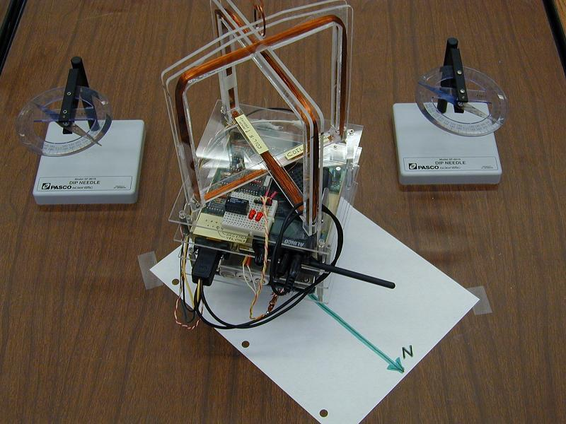
Earth's Magnetic Pole: . But first,
I just stole this image from the British Geological Survey site which shows where the
earths magentic pole is located. The blue plot is the point where compasses generally
will point from other places on earth. But the red plots of the dip-pole
are where the compass sees no horizontal component at all (I think?).
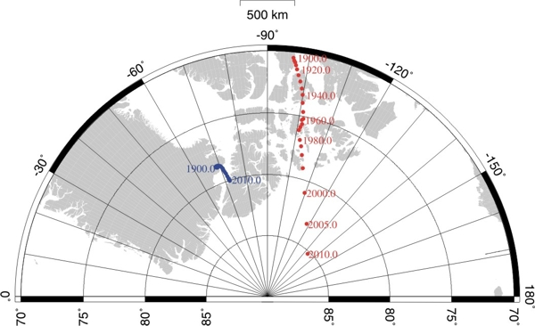
Magentically Stabilized Satellites
This web page was prepared to help the ground user visualize the satellites attitude with respect to the geometry of passes in his location. To produce these plots, I simply added a vector to the display that I wrote for some of my tracking programs. The vector is shown in the direction of the Earth's North Magnetic pole as it would appear to the satellite observer looking in the given direction.
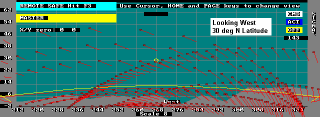
The above plot shows how passes look in the Southern USA at 30 deg Latitude looking West. Notice how satellites to the south are quite horizontally polarized and the closer to due south and lower, how the observer is usually in the null of the antenna. But this changes smoothly as the satellite moves north.
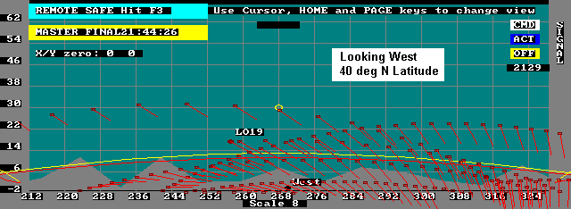
Notice how the problem to the South is not as great, but that clearly all passes are vertical polarization when the satellite is nearer to the North.
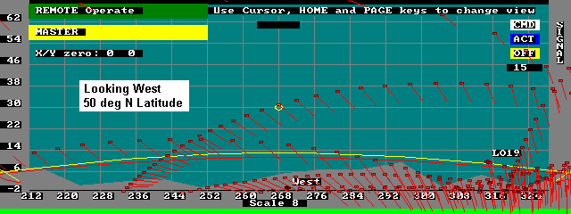
At the Northern Latitude of 50 degrees North, the effect of the southern horizontal alignment becomes less, but the problem of the satellites null pointing right at you remains when the satellite is due south. This effect is shown better in the following southern views:
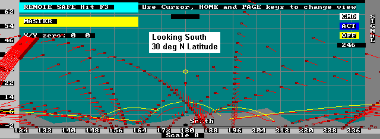
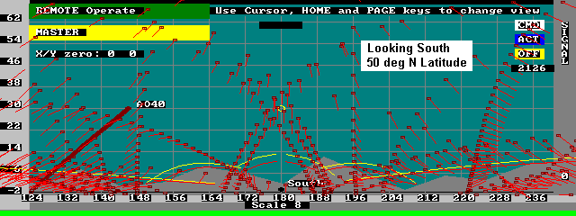
And to the North, everything remains Vertical or nearly so.
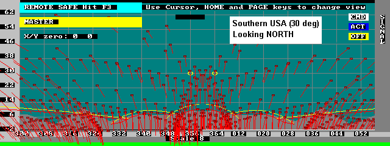
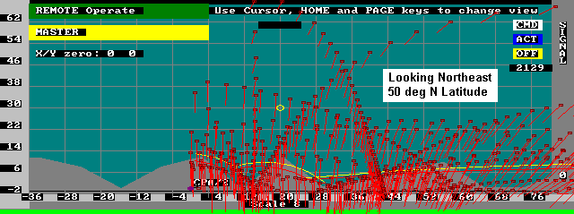
SOUTHERN HEMISPHERE
In the Southern Hemisphere, things will be upside down with respect to these plots. The vector still points to the Earth's North magnetic pole, but this will appear to be "up" instead of down as it was in the Northern Hemisphere. The following plot is the view to the East in the Southern Hemisphere.
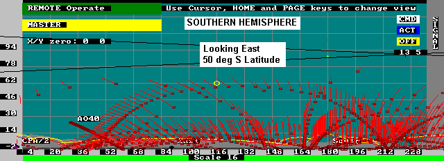
GRAVITY GRADIENT:
And last, is a plot of a Gravity Gradient Stabilized satellite. Until I plotted this, I assumed there would be some small deviation from vertical depending on the direction and distance to the satellite... Sort of looking at it from a distant angle. But once I studied it, I realized that in any direction, the orientation of the antenna towards the center of the Earth will have only a vertical component no matter where on Earth you view it as shown below. Typical Gravity Gradient Amateur Satellites have been UO-11, UO-14, Sunsat, SO-41, SO-50.
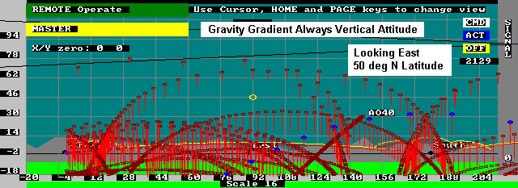
Further, the higher the elevation angle when you view it, the further into the cone of the null of the antenna. Thus the projection you see above shows the vectors smaller, the higher they are in elevation. But this has less of an effect than may appear, because the satellite is 6 to 10 dB closer when it is at those higher elevations.
SAT-GATES: One of the reasons for this web page is to help stations that are setting up FIXED antennas and adding their station's heard packets to the global APRS internet linked ground stations. These plots here will show you where to expect your best data for a given orientation. Examples of WEB pages that use the live data from these ground stations are ARISS and PCsat. But remember it only applies to antennas on Magnetically or Gravity Gradient stabilized spacecraft.
FARADAY ROTATION:
Faraday rotation will impact the actual polarity of the signal arriving at the Earth station antenna. The amount of rotation is greater near the horizon and near the poles and the equator. But it is less by the square of frequency. Hence, the effect is only one tenth as much as 70cm as it is at 2 meters. Even at 2 meters, for a quiet sun the amount of rotation may only be a few degrees, though it can be as much as 45 degrees or more with an active sun and low angles...
DISCLAIMER: This web page is evolving and Does not yet have all the satellites listed and my math for these projections may need further tweaking. I developed a simple model of the Earths magnetic field with the North and South magnetic poles being at the Earth's north and south geometric poles. So it does not account for the offset of the poles nor the up to 10 degree offset angle of the poles. Here are the relationships I am using and I welcome better models:
Where AZ and EL are the local Azimuth and Elevation angles to the satellite, and Lss is the latitude of the sub-satellite point. MYlat is the Latitude of the viewer. Feedback welcome to bruninga(circle-at)usna.edu
SATELLITE NOTES: Note, you will not see the variation above on PCsat, because none of PCsat's antennas are aligned with the magnetic vector although the satllite is. All of the antennas on PCsat are made of dual orthogonal whips oriented at 45 degrees to the main magnetic axis. Thus there is always one or more that are broadside to the user, and no attitude can place the ground user in a null. Similarly most of the other PACSATS also have their UHF whips in such a multi-whip cross polarized arrangement. But their SINGLE VHF whip is along the Spacecraft's magnetic vector and will see the attitudes above.
|
|